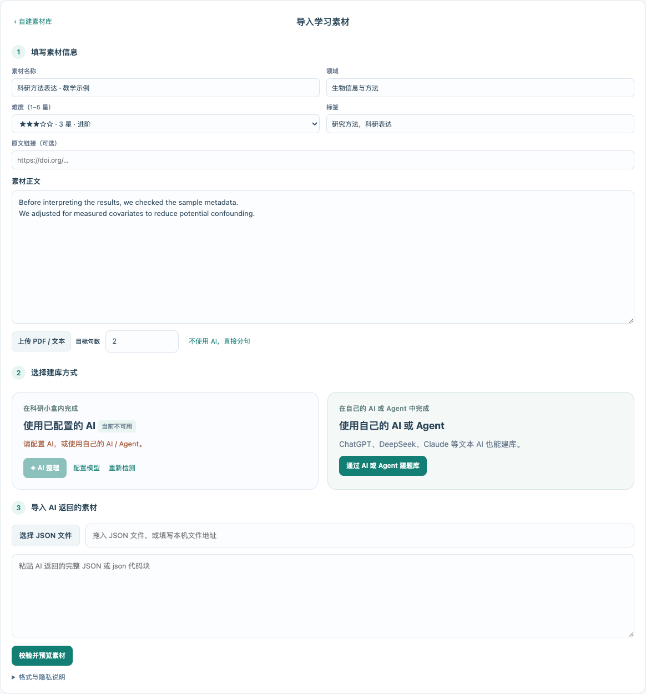

科研常用小工具集合 · 选择一个开始
☆ 去github点个Star让摘要找到合适的读者
梳理研究亮点，结合本地期刊库比较投稿方向。
AI 按所选接入方式调用模型（直连 API 或 ZTools AI）；使用在线模型时，摘要会发送至相应服务。外部链接仅在点击时打开。
把参考文献变成一张地图
沿着时间、期刊、影响因子与作者关系，探索你的文献集合。
● 默认本地处理文献计量方法与数据边界
年度生产、来源频率、作者生产、合著与共词网络参考 Bibliometrix / VOSviewer 的常用方法。本插件在本机独立实现，没有调用这些软件。仅分析当前文件，不把样本频率解释成整个学科的趋势；疑似重复条目保留并标注。网络展示有节点和连线数量上限。
IF 取自本地 JCR 快照（当前库为 2025 JIF），不是论文发表当年的指标，也不用于评价单篇论文质量。缺引文数据时不生成共被引、文献耦合与 h-index。
辅助区分综述与研究论文
AI 仅接收标题、已有摘要与类型字段。AI 判断均标为待复核；缺少证据时保持“待确认”。
文献清单
当前版本更新记录
显示当前运行的版本。安装更新后，退出插件并重新打开即可使用新版。
数据如何处理
- BibTeX 解析、统计和主题网络在本机完成，文件不会自动上传。
- 使用在线模型时，分析内容会发给你选定的服务商；使用本地模型时按你的本地服务配置处理。
- 划词翻译仅发送所选文字。在线语音生成发送当前英文句子；附带音频和录音在本机播放，录音不会自动上传。
- 直连 AI 与翻译密钥保存在本机独立凭据文件中，重启可继续使用；可随时清除，题库备份不包含密钥。
- 投稿助手不保存摘要、BibTeX 或分析历史；英语题库与学习记录通过 ZTools 插件存储保存，若宿主开启同步，请同时留意 ZTools 的同步设置。音频与录音保存在当前设备。关闭插件前请导出需要保留的结果。
数据来源说明
- 期刊指标
- 本地 JCR 2026 快照（2025 JIF），查询时无需联网；期刊指标用于参考，不代表单篇论文质量。
- CCF 推荐目录
- 中国计算机学会第七版目录（2026.3），包含推荐会议与期刊。
- 科研英语
- 内置表达与四个官方素材包为原创教学材料；自建课程保留用户提供的来源。Andrew 配音由 Microsoft 在线语音生成。下载素材时连接官方 GitHub Pages。
使用与反馈
作者 Asa12138 · 开源科研工具。反馈问题时请附上科研小盒版本、ZTools 版本、操作系统与报错截图；请隐藏 API 密钥和未公开研究内容。
本机数据未能载入
请重新加载插件。若仍失败，请安装完整的修复包，无需卸载或清空数据。
科研英语
题库与学习记录保存在本机
内置素材库
已加入本机，点击课程即可练习。
导入科研英语课程 JSON，核对预览后保存；本地 JSON 也支持恢复题库与记录备份。
可选素材包
下载后加入上方内置素材，学习记录长期保留。
近 7 天学习时长
本月练习分布
空格 / Tab 换词；← → 在词内移动，到边缘切换单词；↑ ↓ 切换输入框；Enter 提交整句；Alt + P 播放；Alt + A / F8 打开解析；Esc 关闭浮层。
声音与音效
微软自然语音 · 3 个美式声音、2 个英式声音。五种音色均附带本地试听，无需联网。内置 24 句及官方素材包附带 Andrew 音频，下载后可离线播放；其他声音按需在线生成，按音色缓存。解析音标默认美式。
主题外观
翻译与网络
在答案与解析的英文句子中点击单词，或拖选词组查询。只发送选中的文字。
密钥保存在本机，不包含在题库备份中。
谷歌翻译与单词发音 · 网络设置
支持 macOS / Windows 的静态 HTTP 代理与代理环境变量。若只开启了 PAC 或浏览器代理扩展，请填写代理软件的 HTTP / Mixed 端口；不要填写 SOCKS 端口。此设置只影响谷歌翻译与单词在线发音。
素材与题库
素材下载来源
默认使用科研小盒官方素材目录；可填写自己的公开 HTTPS JSON 地址。留空保存可恢复默认，点击「获取素材」后联网更新。
历史版本与最近删除
用自己的 AI 或 Agent，把材料做成英语题库
ChatGPT、DeepSeek、Claude、Gemini 等普通文本 AI，都可以按「复制完整提示词 → 返回 JSON → 导入」操作，无需 MCP，也无需在科研小盒里填写 API key。支持 MCP 的 WorkBuddy、Codex 等 Agent 还可以连接 ZTools，直接校验并保存题库。
准备材料 → 让 AI 整理 → 导入预览并保存。模型不能读取文件或网页时，粘贴正文即可；扫描 PDF 先提取文字。
填写这次想练什么
进入「我的素材库 → 自建题库」，填写素材名称、领域、星级难度、标签和目标句数，再粘贴原文或上传 PDF / TXT / Markdown。截图以教学材料为例，练习科研方法表达，目标为 2 句。

选择文本 AI 或支持 MCP 的 Agent
展开「通过 AI 或 Agent 建题库」。使用 ChatGPT、DeepSeek、Claude、Gemini 等文本模型时，点击「复制完整提示词（无需 MCP）」，在聊天窗口粘贴并发送；提示词已包含正文、句数和 JSON 格式。无法读取链接或附件时，补充粘贴正文。若使用已连接 ZTools MCP 的 WorkBuddy、Codex 等 Agent，则选择「复制给 Agent 的建库指令（推荐）」，由 Agent 校验并保存。

可以补充：「请输出完整课程 JSON，不要省略句子；保留原文依据，拿不准的结果不要编造。」等待 AI 返回完整 JSON；能生成文件时，也可下载 .json 文件。
带回结果，预览后开始打字或听写
在第 3 步「导入 AI 返回的素材」粘贴完整 JSON，或选择 / 拖入 .json 文件，点击「校验并预览素材」。检查英文、中文、解析与来源，再点击「保存题库并开始练习」。也可以在自建素材库点击「导入题库」选择 .json 文件。

截图使用教学演示材料，不代表你的研究结果。保留第一步原文再粘贴结果，程序才能校验句数和原文依据。
已经连接 MCP？可以让 Agent 直接保存到 ZTools
- 在 ZTools 设置中开启 MCP，把它显示的连接配置添加到 Agent 的 MCP 设置；使用该机器实际显示的地址和参数。
- 让 Agent 检查是否能找到
list_english_lessons、prepare_english_material、save_english_lesson。工具名可能带micro_tools_前缀。 - 在建库页面复制「给 Agent 的建库指令」。Agent 读取材料、按格式整理、校验并追加保存。
- 回到自建素材库点击「刷新 MCP 题库」。MCP 写入连接着的 ZTools；网页版仍需导入 JSON。
WorkBuddy、Codex 的具体连接入口随版本不同。能发现上述工具才表示已连通；仅安装 Agent 不会自动连接 ZTools。
遇到问题怎么处理？
- 找不到 MCP 工具：先用上面的 JSON 流程，不影响建库。
- JSON 校验失败：把报错和原 JSON 发回所用 AI，让它修正并返回完整 JSON。
- 保存后找不到课程：JSON 导入后需点击保存；MCP 保存后刷新自建素材库。
- 素材含未公开研究内容：先确认所选 Agent 和模型适合处理这些材料。
模型与备份
课程和练习记录长期保留。备份包含题库与记录；录音请在口语练习中单独下载。
导入学习素材
填写素材信息
选择建库方式
使用已配置的 AI 检测中
正在检测 AI 连接…
使用自己的 AI 或 Agent
ChatGPT、DeepSeek、Claude 等文本 AI 也能建库。
查看本批未通过的模型返回（已保留）
通过 AI 或 Agent 建题库
文本 AI：把完整提示词复制到 ChatGPT、DeepSeek、Claude 等任意文本大语言模型，将返回的 JSON 导入第 3 步。
MCP Agent：将建库指令交给已连接 ZTools MCP 的 WorkBuddy、Codex 等 Agent，可直接保存题库。
导入 AI 返回的素材
格式与隐私说明
目标句数为 1–120 的整数；JSON 文件最大 2 MB。
PDF 在本机提取；点击「AI 整理」才将正文发送给已配置的模型。
连接检测只发送测试文字，不发送素材；可能消耗少量模型额度。
预览与修订
编辑课程 JSON
附带的 Andrew 音频在本机播放。启用在线生成时，英文句子发送给微软，生成音频缓存在本机。声音与预加载偏好在课程中心设置。